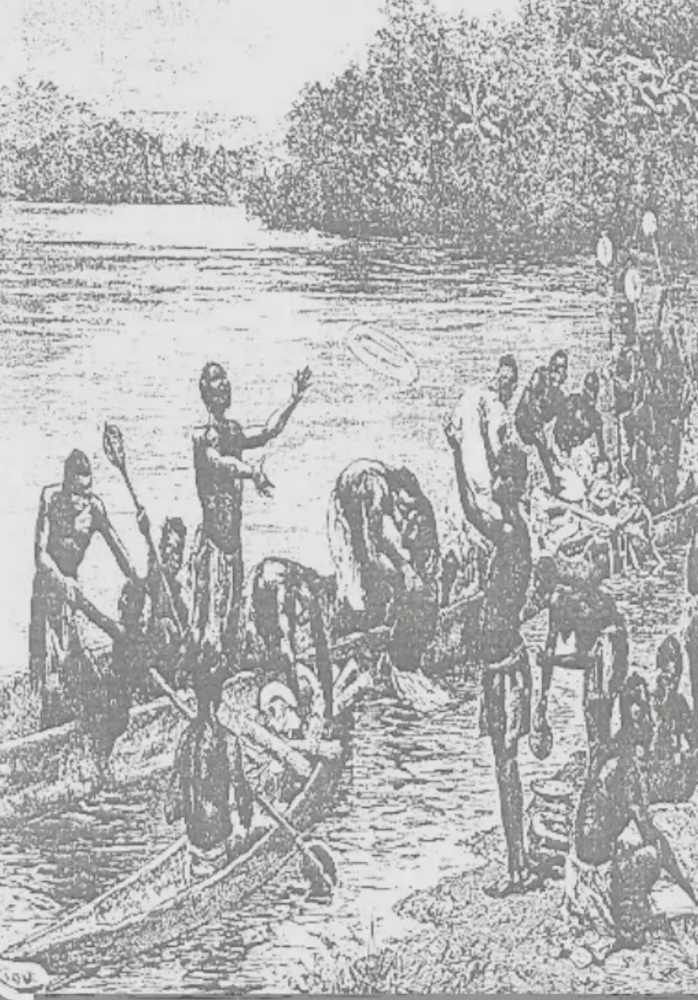
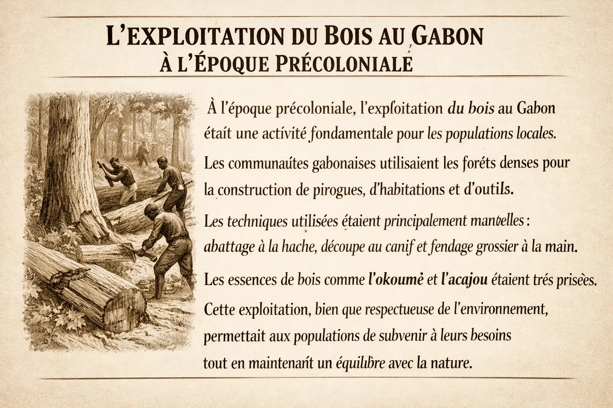

L’exploitation par les populations

Pendant la période précoloniale (avant le XIXᵉ siècle). Avant l’arrivée des Européens, les populations locales exploitaient déjà certaines ressources :

Pendant la période précoloniale (avant le XIXᵉ siècle). Avant l’arrivée des Européens, les populations locales exploitaient déjà certaines ressources :

Avant la colonisation, le commerce du caoutchouc au Gabon reposait sur une exploitation traditionnelle des ressources forestières, mais sous l’effet de la demande mondiale, il s’est intensifié rapidement.
Il a contribué à transformer l’économie locale et à accélérer la pénétration coloniale.


Avant la colonisation, le Gabon bénéficiait d’une abondance forestière remarquable, avec des essences prisées telles que l’iroko, le sipo et le bubinga. L’exploitation du bois reposait sur des techniques artisanales et communautaires : abattage manuel avec des haches et scies rudimentaires, façonnage sur place, puis transport par pirogues le long des rivières ou par portage sur de courtes distances.
Le bois servait essentiellement à la construction des habitations, à la fabrication d’outils et d’objets rituels, et constituait un produit d’échange précieux dans le commerce interethnique. Les pratiques étaient durables et adaptées à l’environnement local, reflétant une gestion intelligente des ressources forestières avant l’arrivée des exploitations coloniales à grande échelle.